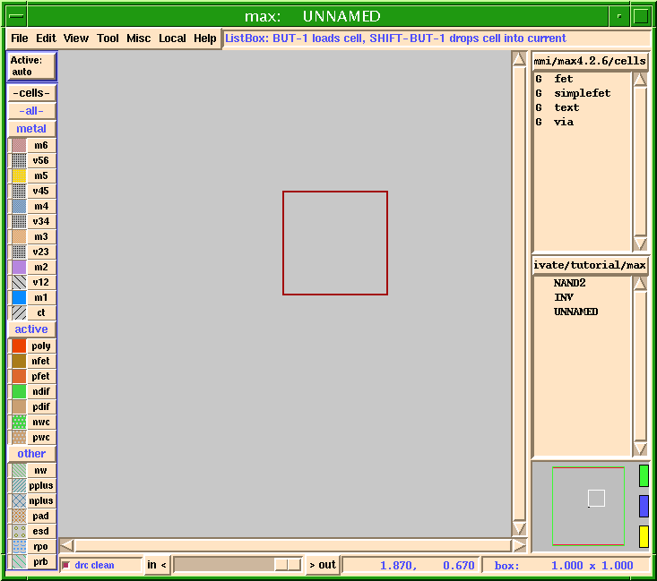
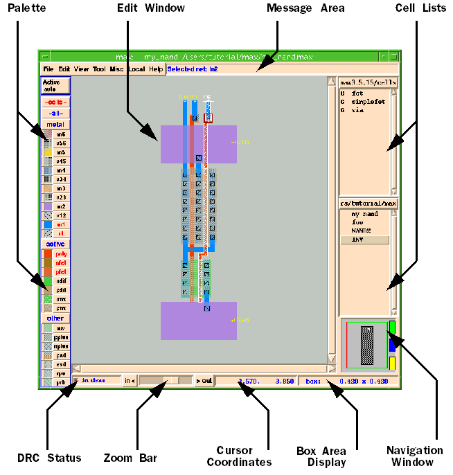
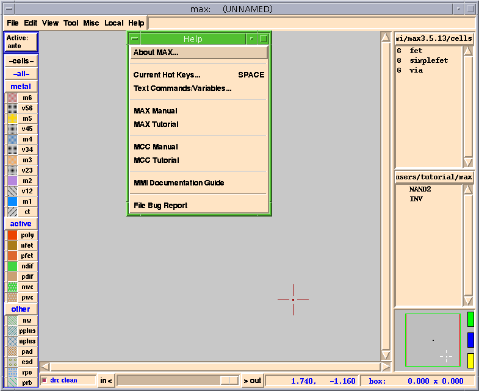

MAX Layout Environment Tutorial |
Part 1
Introduction
- Welcome to MAX, the full-custom layout editor from Micro Magic Tools. MAX is more than just a simple layout editor. It is a complete layout environment.
MAX Features
- Interactive viewing and editing of hierarchical layout
- Continuous DRC feedback during layout
- Hierarchical and incremental DRC
- Built in netlisting
- Interactive connectivity tracing
- Interactive wiring tool with flylines to show connections not yet completed
- Layout generator for gates (using MAX-LS)
- Generators for large regular structures such as SRAMS, ROMs, PLA's, and DRAM's (with the optional MegaCell Compiler)
- Interfaces to other tools, including schematic capture (for example SUE), and batch DRC and LVS (for example Dracula or Calibre).
- Smart palette for easy control and feedback on layers
- Full customization and extension via Tcl/Tk scripting language and API
- Technology independence via technology description files
- Optimized for large databases
- Very Fast Redisplay for Whole Chip Viewing and Inspection
- Reads/writes GDSII
- Runs on Solaris and Linux operating systems.
- This tutorial will introduce you to many of these features. Consult the Micro Magic Tools MAX User Guide and on-line documentation for further information.
Starting up MAX
- Before we get started make sure someone has already installed MAX at your site.
- To run the tutorials, you need to make a personal copy of the MAX tutorial example files using
mmi_tutorial.
- Make sure that the appropriate tool (MAX) is selected and then click on
Install Tutorial. The default installation directory is“mmi_private/tutorial”in your home directory. You can also select a different directory for installation. Don't worry if the directory doesn't exist, themmi_tutorialscript will make it if it can. You can also use this to reinstall a clean copy of the tutorial.
- To start the tutorial, you must first "cd" (change directory) to the directory that you installed the tutorial into. If you used the default directory, type:
cd ~/mmi_private/tutorial/max
- Otherwise, replace the above directory with the directory you selected. This directory contains files that you will need to run the tutorial.
- A window should come up that looks something like Figure†1. The rest of this portion of the tutorial will go over each section of the MAX windows.
Figure 1: MAX Window

MAX Screen Layout
- On the very top of the window the title bar should say "
max: UNNAMED".
- "
UNNAMED" means that you have not specified the file (cell) you wish to edit.
- Next, across the top you should see the menu bar which contains the following menu items:
File,Edit,View,Tools,Misc,Local, andHelp. These are pull down menus much like any other application.
- Directly to the right of the
Helpmenu is theMAX Message Area. Depending on the location of the cursor, it currently says something like "main mode, BUT-1 selects, BUT-2 moves selection...". TheMAX Message Areais a sort of mini-help feature. It tells you what each mouse button does, and when you have pulled down one of the menus from the menu bar, the message area will give you a short explanation of what the highlighted menu item does.
- The remainder of this section of the tutorial goes over each area of the MAX window. Refer to the MAX User Guide for a more detailed description of the MAX window. Figure points out the different attributes of the MAX window.
Figure 2: MAX Layout Window

Cell List Boxes
- Down the right side of the window are several small List boxes.
- Each List Box contains cells in a given directory. That directory can be the user's "working directory" or a library.
- Additional List Boxes can be added (or boxes deleted) by clicking the left mouse button (Button-1) over the List box header (the part that says
users/tutorial/maxin Figure†1).
- Then simply click the left mouse button (Button-1) on either
Make new list box,orClose this list box.
- The directory the list box points to can also be changed by clicking on the desired directory. The directory list includes the directories of all cells that are currently loaded into MAX.
- Your
.maxrcfile can specify library directories to be autoloaded at startup time.
- The
.maxrcfile contains several other useful pieces of information. (See the Micro Magic Tools MAX User Guide for more details.)
- You can adjust the width of the list boxes by moving the mouse pointer over the vertical bar just to the left of the text. The bar will change to a little line with arrows on both the left and right sides.
- When the arrows appear you can adjust the width by simply holding down the left mouse button (Button-1) and dragging the mouse to the left or right.
Navigation window
- Below the list boxes is the
Navigation Window. For large designs, you can use theNavigation Windowto control the view you see in the mainMAX window.
- The small colored buttons on the right of the
Navigation Windowallow you to do several things.
- The topmost button (green by default) will toggle between the last two zoom views. The additional buttons allow you to save and return to views.
- For example, if you were at a view you knew you wanted to return to, you would simply click the right mouse button (Button-3) on the middle (blue) button to remember that location and zoom factor.
- If you later wish to return to that view you simply click the left mouse button (Button-1) on that blue button to return to where you were.
- The top button always toggles to the last view. If you desire, you can add additional buttons to save views. Both the number of view-save buttons, and their colors, can be changed in your
.maxrcfile.
Scroll and Zoom bars
- Scroll Bars are laid across the bottom and right side of the
Layout Window(and on the right side of the List boxes). These work like the scroll bars in most other applications.
- Below the bottom scroll bar is the Zoom Bar. Pulling the slider button to the left zooms in, and to the right zooms out.
Mouse Coordinates and Box Size Location
- In the lower right hand corner the Box Size (in microns) is displayed. (More about the Box later.) This is useful when you wish to make an object a precise size. It is also useful for when you select an object and want to know how big it is.
- Just to the left of the Box Size is the Mouse Coordinates display. Mouse coordinates are oriented with respect to the top level cell.
DRC Control and Status
- In the lower left corner is the DRC Status Box. It tells you the current status of the continuous interactive DRC which runs in MAX. The
DRC Status Boxalso has a small radio button to turn the interactive DRC on or off with left mouse button.
The Palette
- Down the left side of the window is the Smart Palette. The Smart Palette provides many features:
- It controls which layers are visible, and lets you choose layers for `painting' (drawing rectangles).
- It gives feedback on what is currently under the cursor, and what is currently selected.
- It allows you to control which layers can be selected.
- And finally, it allows you change the color or stipple patterns of any of the layers.
- Refer to the MAX User Guide for more details.
Layers
- Just above the palette are several buttons (
Active:, -cells-, -all-).
- Active lets you select the active layer. If you start a wire, it starts in the current Active layer. If Active is set to auto, the wire starts on the layer the cursor is currently over, or the default layer (usually set to M1).
- Cells controls whether or not sub-cells and gcells can be selected.
- All allows you to make all of the layers visible or invisible at the same time.
Getting Help
- Before we go any further, here is how to get help if you ever need it.
- There are several levels of help available "on-line" to MAX users. You already know about the quick
Helplisted in theMAX Message Area. In addition, you can access the complete on-line manual, the complete list of active hotkeys, and complete documentation of the text commands at any time.
- Assuming you have MAX running, click and hold down the left mouse button (Button-1) on the
Helpmenu. This should pop up a sub menu as shown in Figure†3.
About MAXtells you the version of MAX you are running, the technology you are using, etc. You should make sure that you are running themmi18technology for this tutorial.
mmi18is a generic 0.18um CMOS technology provided by Micro Magic Tools. It is similar (although not exactly the same) to many current 0.18um technologies and is a good place to start if you need to generate your own technology file.
About MAXwill also tell you where theMMI_TOOLSenvironment variable points to. (This is the directory where the MMI tools are installed at your site.)
Figure 3: MAX Help Menu

Current Hot Keysgives you a list of all available hot keys. You can also hit the Space bar to bring up this list.
Text Commands/Variablesbrings up documentation for the MAX text commands and variables. Text commands are useful for writing scripts, generators, and other helpful programs. Text commands and the Tcl/Tk interface are the MAX API. They allow the user to add their own features to theLocalandToolmenus.
MAX Manualbrings up the MAX manual in your browser. The default browser is Netscape. This can be changed in your.maxrcfile.
MAX Tutorialbrings up this tutorial.
MMI Documentation Guidebrings up all of the documentation for all of the Micro Magic Tools software. This document has links to items like the Micro Magic Tools SUE User Guide, the Micro Magic Tools MAX User Guide, other Micro Magic Tools software programs, and even to this tutorial.
- Before proceeding you should bring up the Micro Magic Tools MAX User Guide and see what's there. The User Guide is the reference manual to MAX and contains lots of information that you will not find in this simple tutorial.
- You might also want to look at the menu items just to familiarize yourself with what's there.
Tear Off Menus
- Sometimes it is convenient to make a menu its own window.
- For example:
- If you are running SUN's Common Desktop Environment (CDE) then the following applies:
- The window iconifies by clicking the small dot in the top right corner.
- You can move the window by clicking and holding down the left mouse button (Button-1) over the top title bar and dragging it around (release button to stop).
- Or you can close the window by holding down the right mouse button (Button-3) over the top title bar and selecting
Closefrom the menu that pops up, or typingAlt-F4.
- If you are running another window manager, your windows might behave a little differently. Consult your window system documentation for more details.
- The chosen menu will stay pulled-down until you select a menu item, or another menu.
| ----- Micro Magic ----- |